SAP CAP Project Presentation
LabSupplies
Prepared By Dasha Ermolich
October 2023
SAP HANA Cloud
Cloud Identity Services
SAP Fiori Elements
SAP Flexible Programming Model
Adobe PDF Services
SAP Build Apps
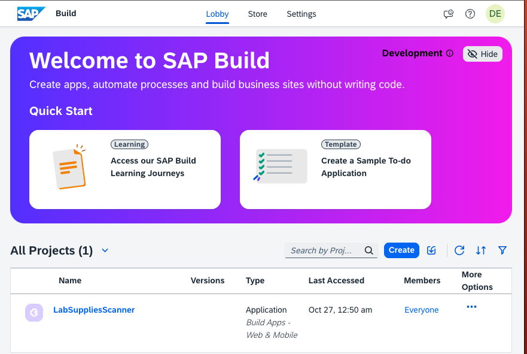
SAP Build Work Zone
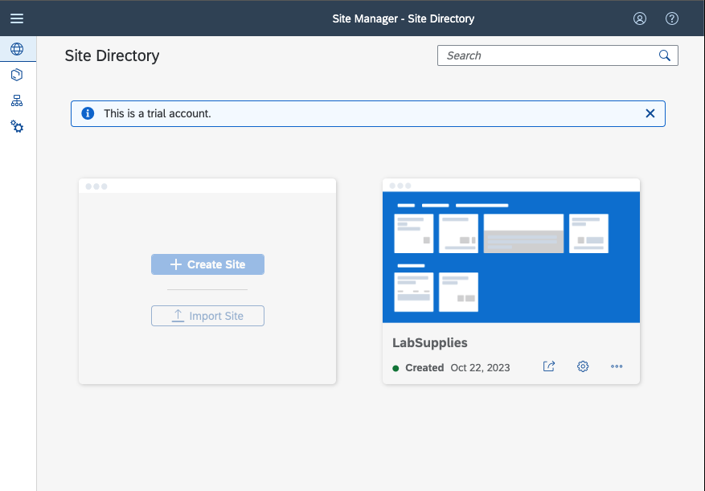
Authentication via social media
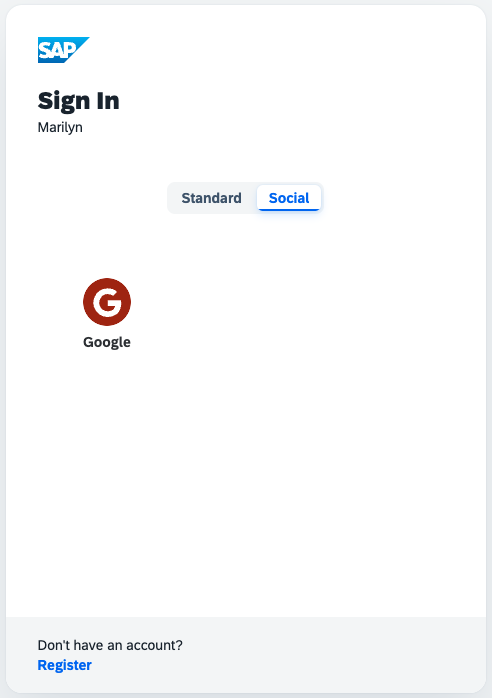
Roles restrictions
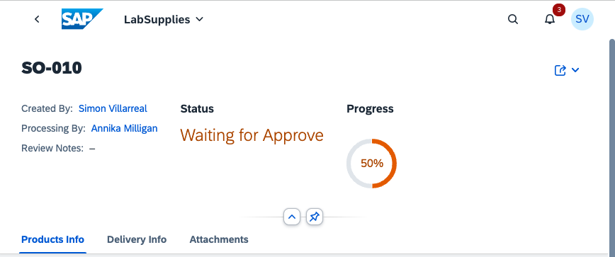
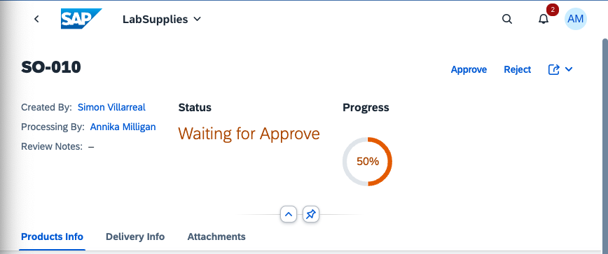
Notifications via email and FLP
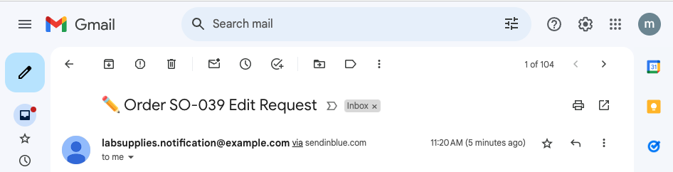
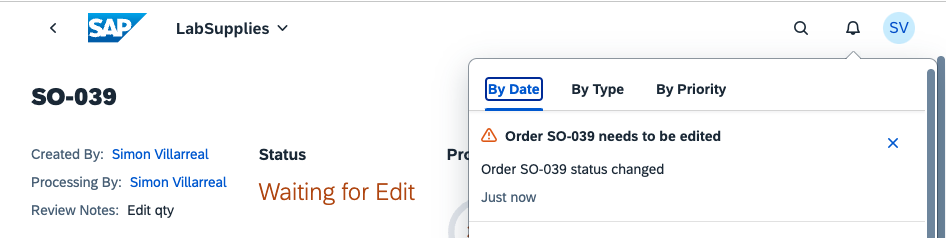
PDF documents creation
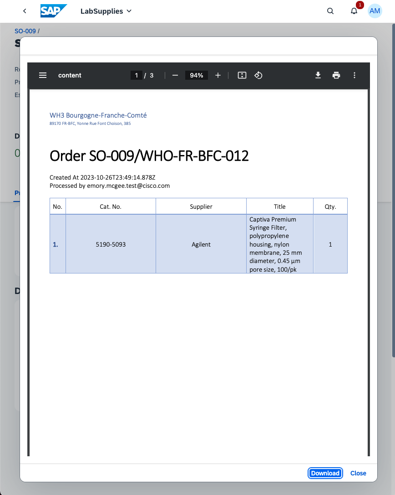
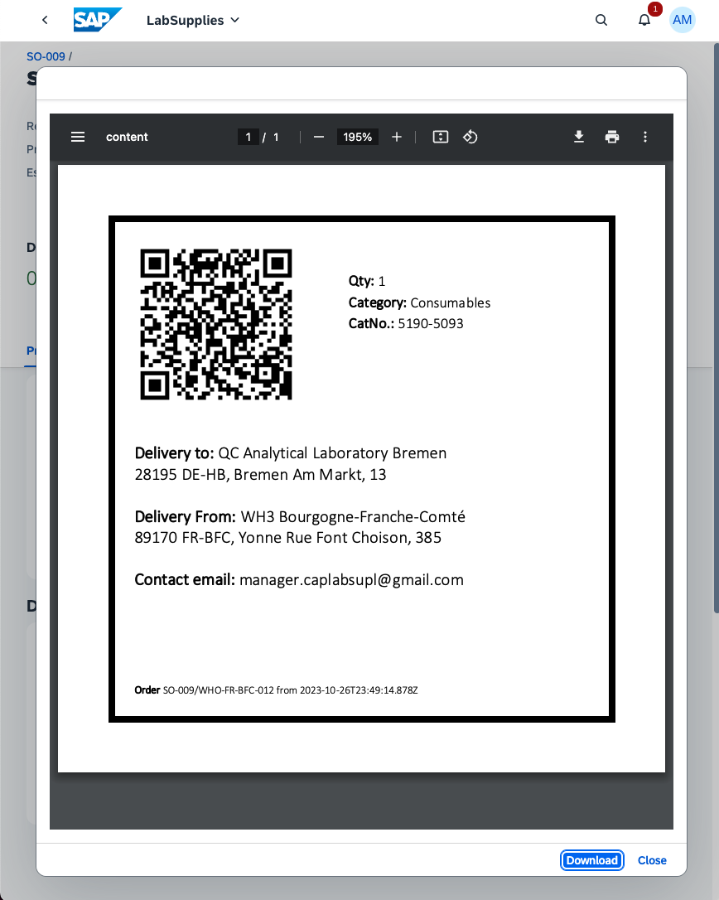
Mobile QRCode scanner application
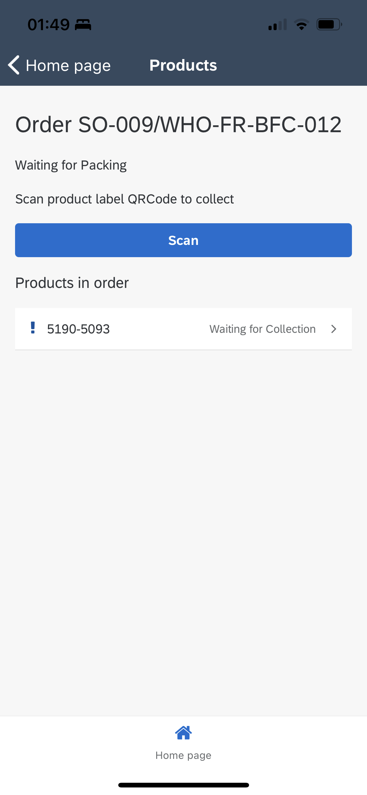
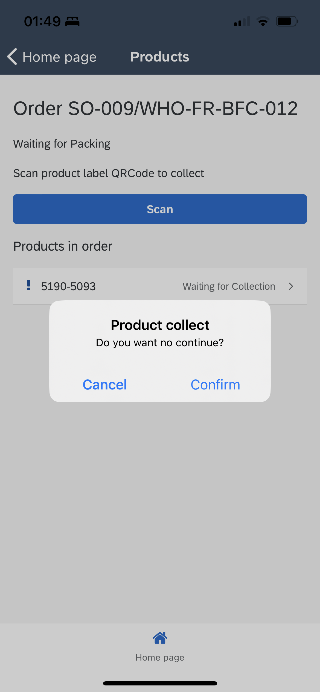
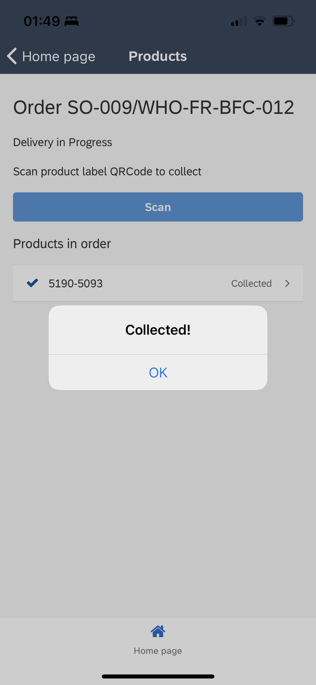
Custom Elements and Visualizations
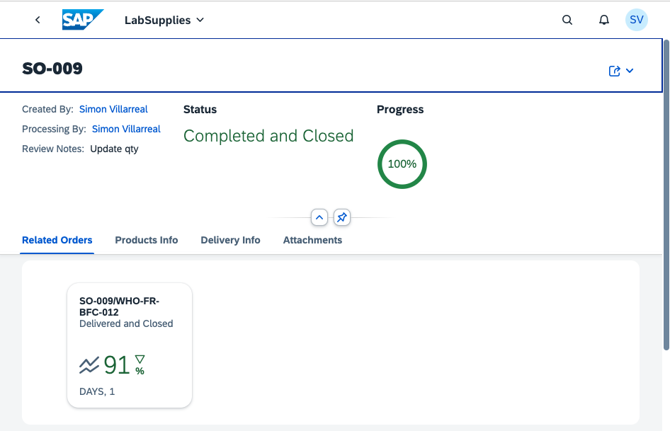
Org structure
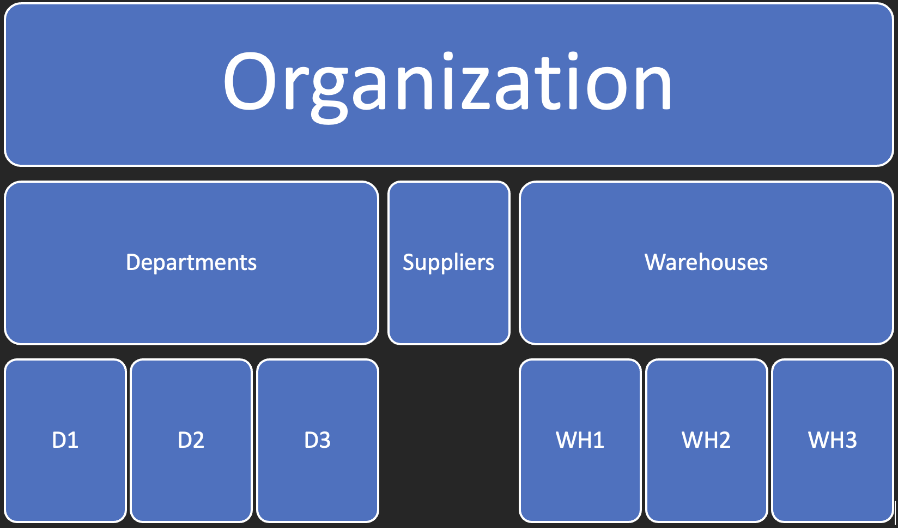
Main Flow

Main Flow

Entity Relationships

Application Demonstration
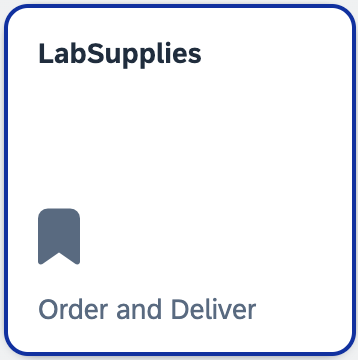
Thanks for your attention